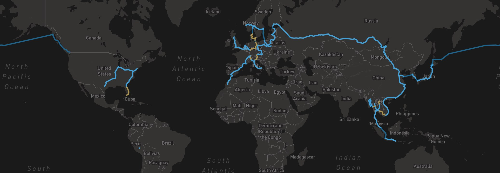

🌲 Hey, I'm Shane Reustle.
I live in Tokyo and help teams build great software. In my spare time, you'll find me meditating on a motorcycle in the mountains, experimenting with filmography, and strategizing how to clean up the planet.
🗼 Techy Tokyo
Tools to strengthen the Tokyo tech community. Meetups and conferences, job openings, workspaces, and more.
📇 Humans
A personal CRM for the people you meet.
✈️ FEIE Calc
Location independent workers who pay taxes in America can save up to $20,000 if they pass this physical presence test.
🚲 Tokyo Bike Share
Tokyo has a comprehensive e-bike share program with an unfortunately lacking web interface.
📅 Tokyo Tech Meetup
Bringing together the English and Japanese Tokyo tech communities.
I've been on a mission to circumnavigate the planet entirely by train and ship before age thirty. Only 9,300 km to go.
39 countries – 19,491 km by train – 7,586 km by boat – 4.2 years spent on the road